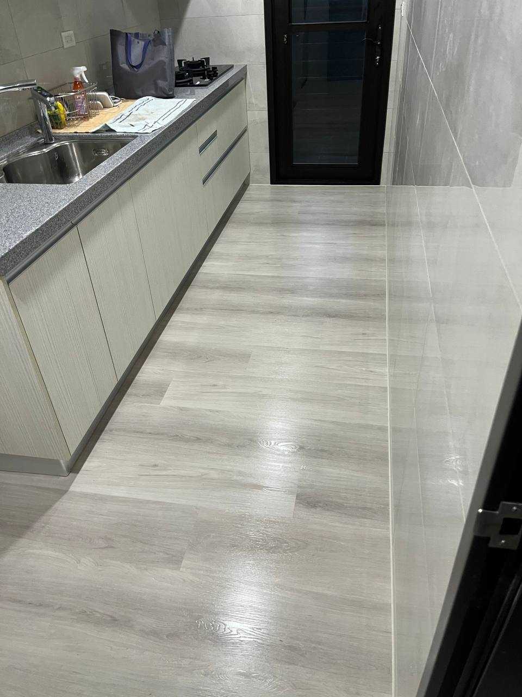
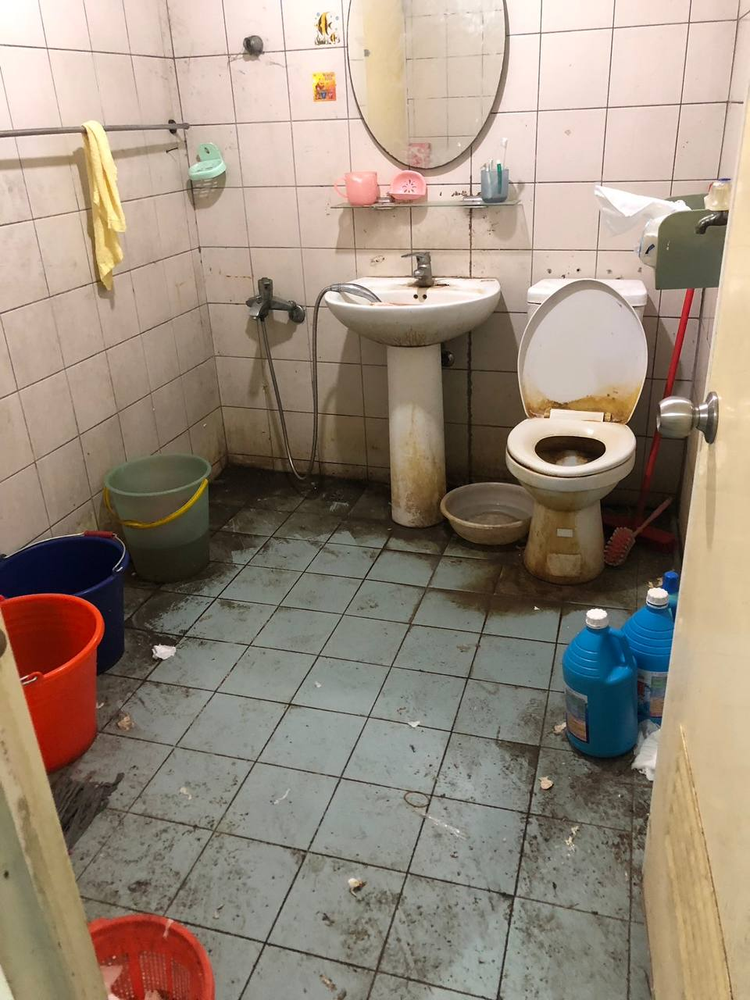
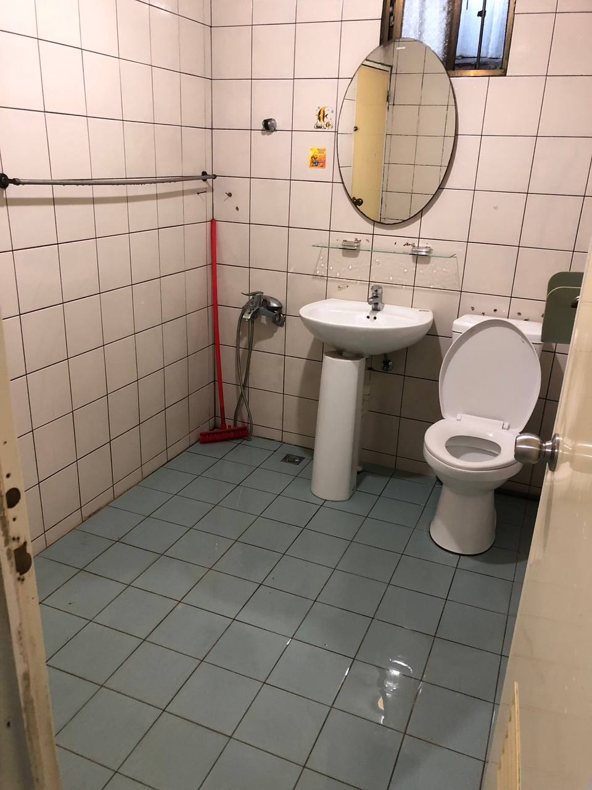
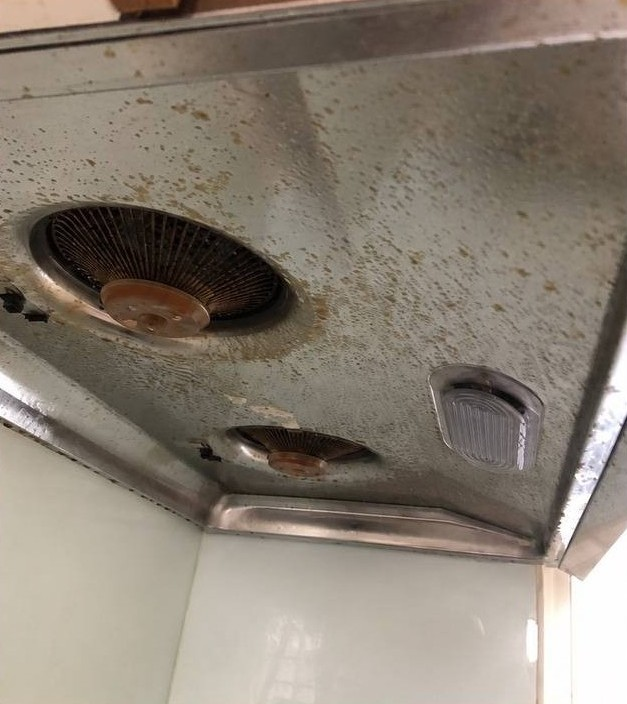
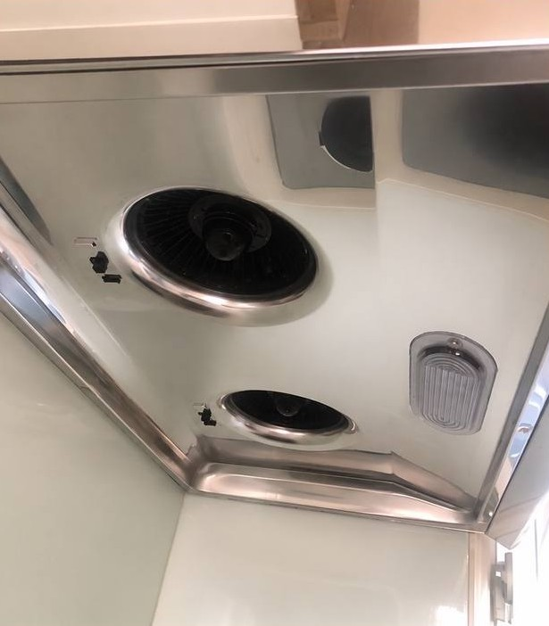
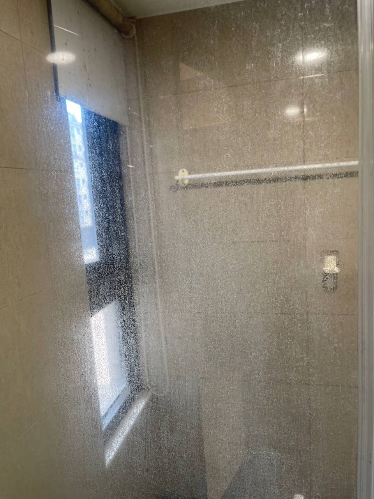
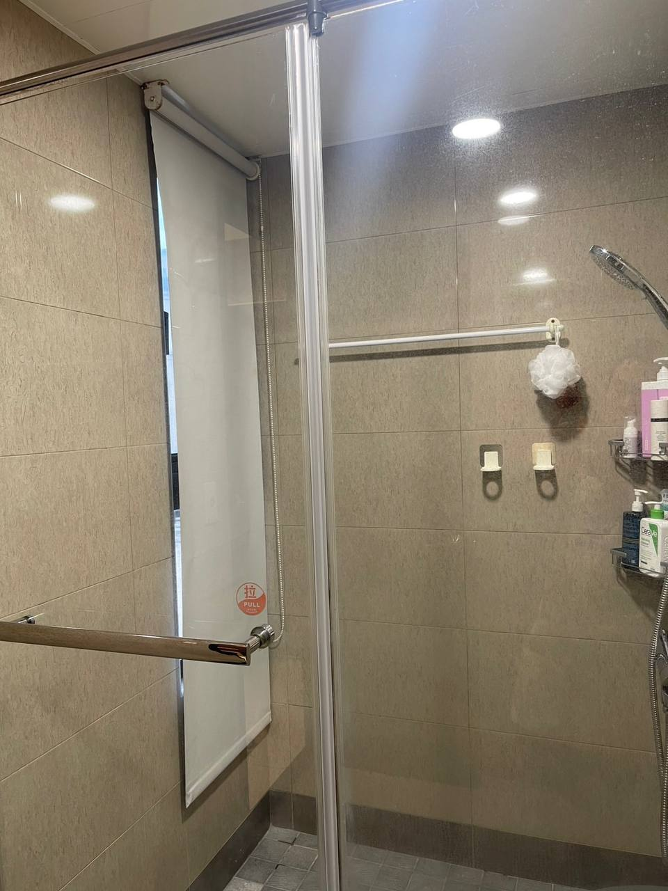

一般居家清潔
日常維護清潔，適合定期整理、維持居家基本乾淨
- 掃拖、吸塵、除塵
- 家具外觀、廚房外觀
- 浴室基本清潔
愛拼哞生活管家
服務台北｜新北｜桃園
下班累到不想動？
地板、浴室、廚房交給愛拼哞來處理
2 人一組到府服務，清潔前會先確認重點，費用有調整也會先說明

清潔後實拍｜廚房地板清潔日常維護清潔，適合定期整理、維持居家基本乾淨
比一般清潔更細，適合長期未清或細節需要加強的空間
新成屋、裝潢後、入住前，協助處理粉塵與細節
搬進去之前，先把空間整理乾淨，入住比較安心
針對床墊、沙發常見髒污與異味協助清潔
住家水塔、透天水塔、定期清洗，協助維持用水環境
陽台、騎樓、地面、牆面青苔處理
做生意的地方最怕油污和異味，協助把環境整理乾淨
洗衣機增高架、電視壁掛架、燈具外蓋、插座面板等簡易安裝與更換，可先傳照片評估
油污較重、發霉嚴重、長期堆放或特殊環境，可先傳照片評估

地面、馬桶、洗手台髒污明顯

地面與衛浴設備恢復乾淨

油垢、斑點明顯

金屬面恢復乾淨反光

玻璃水垢明顯

玻璃恢復清透感
為保護客戶隱私，案例照片不會大量公開；需要查看更多案例可私訊詢問
2 人一組，基本 4 小時起
適合日常維護、定期整理、維持居家基本乾淨
2 人一組，基本 4 小時起
適合油污、水垢、窗溝、邊角與細節需要加強的空間
依坪數與現場狀況評估
適合新成屋、裝潢後、入住前細清
以上為基礎收費方式，實際費用會依清潔範圍、坪數與現場狀況評估
確認前會先說明清楚，您同意後才會安排
床墊／沙發清潔、水塔清潔、青苔清潔、攤販／攤車清潔、簡易安裝／小修繕與特殊清潔，請透過 LINE 個別詢價
每次到府，我們會先問清楚你最在意哪裡、有沒有不能碰的東西，確認好才開始處理
如果到場發現跟原本描述的狀況差很多，需要調整費用，我們會先說明、讓你決定，不會自己加收再跟你說
每次固定 2 人，互相確認細節，比一個人做更不容易漏掉地方，完成時間也比較穩定
清潔工具與基本清潔用品我們自備；若現場有特殊材質、不能碰水、不能使用清潔劑或需避開的區域，請事先告知
做完後會一起看過確認。原本約定範圍內有遺漏，我們會協助補強；若是超出原本範圍的項目，會先說明再評估
完工照片不會隨意公開在網路上；需要看實際案例效果，私訊告訴我們，我們再提供
每天包含假日，LINE 訊息、照片評估、報價詢問都可以傳，不一定秒回，但當天內會回覆
依地區、人員與當日排程安排
平日、假日都可以先透過 LINE 詢問，實際服務時段會依預約狀況確認，不接受臨時到府
確切到府時段以 LINE 確認為準。官方 LINE：@aipinmoo
我們不放客人個資，只整理客人同意公開的服務感受
清潔前會先溝通預算和時間，師傅到場後也會說明哪些可以處理、哪些需要再評估。指定的陽台區域清得很乾淨，整體服務很貼心。
清潔前會先確認預算和時間，最後在約四小時內完成，也有贈送空間淨化服務。服務態度很好，指定加強的地方也清得很乾淨。
第一次找清潔公司，也是透過網路推薦。原本以為來打掃的會是阿姨，沒想到是兩位年輕師傅，但真的不能只看外表；他們細心認真的程度讓我很佩服，也謝謝他們花心思打掃。下次有需要還會繼續找你們。
為保護客戶隱私，案例照片不會大量公開；需要查看可私訊，我們提供裁切後照片。
需透過官方 LINE 完成照片、服務範圍、日期與時間確認後，才會正式保留時段
照片越清楚，越能協助我們判斷清潔範圍、工時，以及是否需要加強處理
若現場狀況與原先描述不同，或需要加時、加項目，會先說明原因與費用，確認後才會處理
到府服務會事先安排人員、車程與工具，若需取消或改期，請最晚於服務日前 2 天透過官方 LINE 告知。服務前一天及當日原則上不接受臨時取消或改期。
現金、文件、收藏品、易碎品、重要私人物品，請先自行收妥或提前告知
重油污、重水垢、霉斑、矽利康發霉、高處或特殊材質，需依現場狀況評估，不保證一定能完全恢復
從傳照片給我們到完工驗收，每個步驟都會先和你確認，不會自己決定
你可以先傳現場照片、坪數和想清潔的區域，我們會先幫你判斷適合的服務，不需要現在就決定
到現場後會先和你確認清潔重點，若狀況和原本評估不同，也會先說明再調整，不會直接開始做
確認服務範圍後安排時間，2 人一組準時到場，盡量配合你方便的時段
依照確認好的範圍逐項處理，過程中遇到狀況會即時和你說，不悶頭做
清潔完成後會一起確認成果。原本約定範圍內有遺漏，我們會協助補強；若是新增項目或超出範圍，會先說明再評估
清潔前先看看這裡，有其他問題也可以直接傳 LINE 問我們
不算喔。送出後還需要透過 LINE 完成照片、服務範圍、日期與時間確認，確認完成後才算正式保留時段。
可以，但請提前告知我們。
因到府服務需事先安排人員、車程、工具與當天時段，若需取消或改期，請最晚於服務日前 2 天透過官方 LINE 告知。
服務前一天及服務當日，原則上不接受臨時取消或改期；若人員已安排或已出發，後續需重新安排可預約時段。
若遇到臨時身體不適、天災、社區臨時管制等特殊狀況，請盡快透過官方 LINE 聯絡，我們會依情況協助調整。
若多次臨時取消、改期或未依約完成確認，後續將視情況保留是否承接服務之權利。
基本方案為 4 小時起。清潔時間會依現場坪數、物品量、髒污程度與指定重點而不同，事前評估僅作為初步參考。
若到場後或清潔過程中發現原預估時間不足，我們會先說明目前進度、可能完成的範圍，以及是否需要加時或調整清潔重點；確認同意後才會繼續，不會未告知自行加時加價。
完工後會一起確認成果。原本約定範圍內有遺漏，我們協助補強；若是新增項目或超出原本範圍，會先說明再評估。
可以先傳照片給我們看看。若只是單一區域，我們會依現場狀況評估是否適合安排，或建議搭配其他區域一起處理。
牆面會依材質與污漬狀況評估。一般灰塵與輕微髒污可以協助處理；若是染色、發霉、壁癌、油漆剝落或滲色，可能無法保證完全恢復，現場會先與您確認。
浴室矽利康發霉也會依嚴重程度判斷。若只是表面霉斑，會盡量協助清潔改善；若霉斑已經滲入矽利康內部，可能無法完全清除，這種情況我們會建議您後續考慮重打矽利康。
不用，清潔工具與基本清潔用品我們都會自備。若現場有特殊材質、不能碰水、不能使用清潔劑或需特別避開的區域，請提前告知我們，方便到場前先確認。
送出預約單後，仍需透過官方 LINE 完成確認，確認照片、服務範圍、日期與時間後，才會正式保留時段
前往正式預約表單，填寫清潔需求、偏好日期與現場照片，送出後我們會透過 LINE 與你確認細節
填完預約單後，請加入官方 LINE @aipinmoo。
完成確認後，才會正式保留時段。